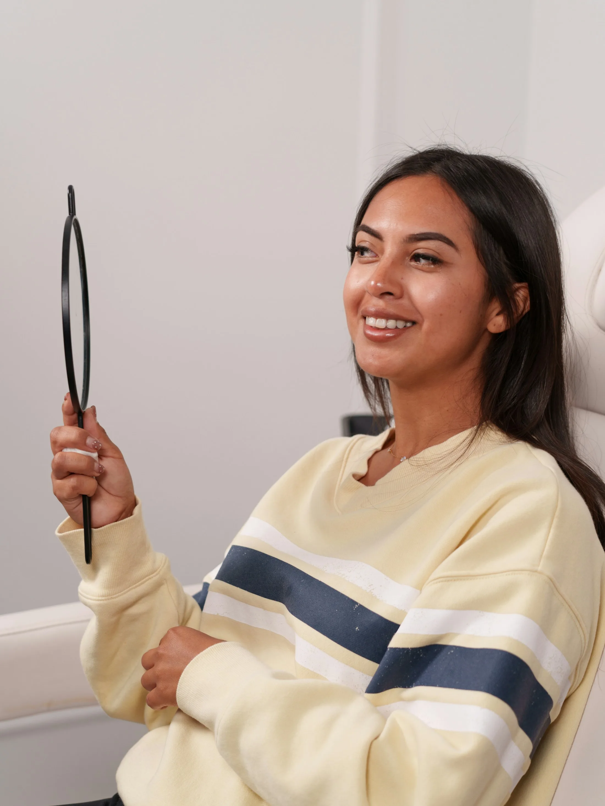
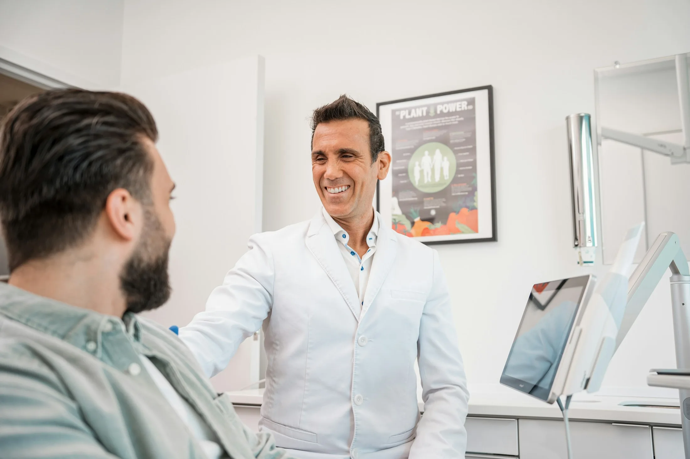
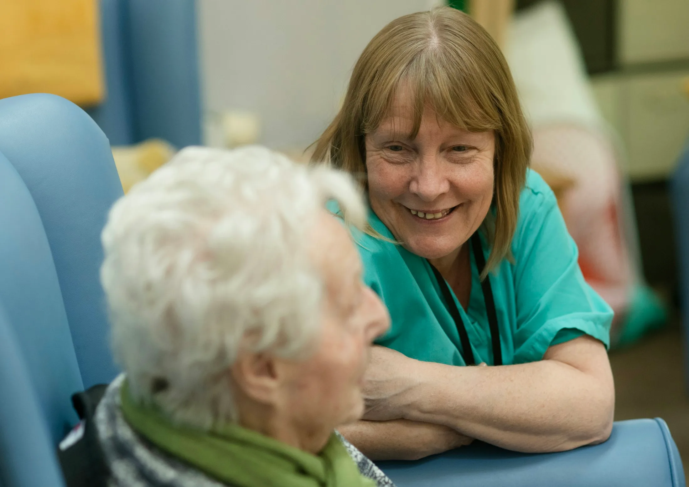
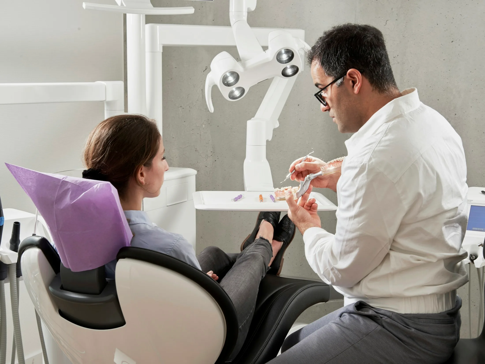
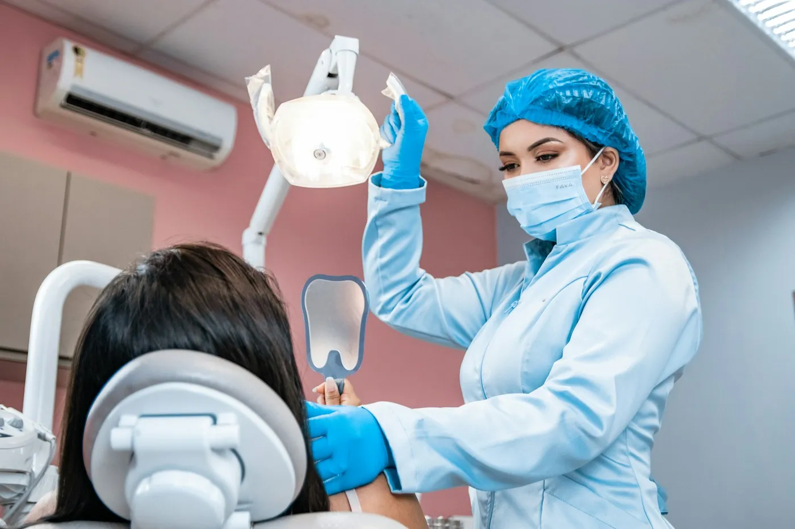
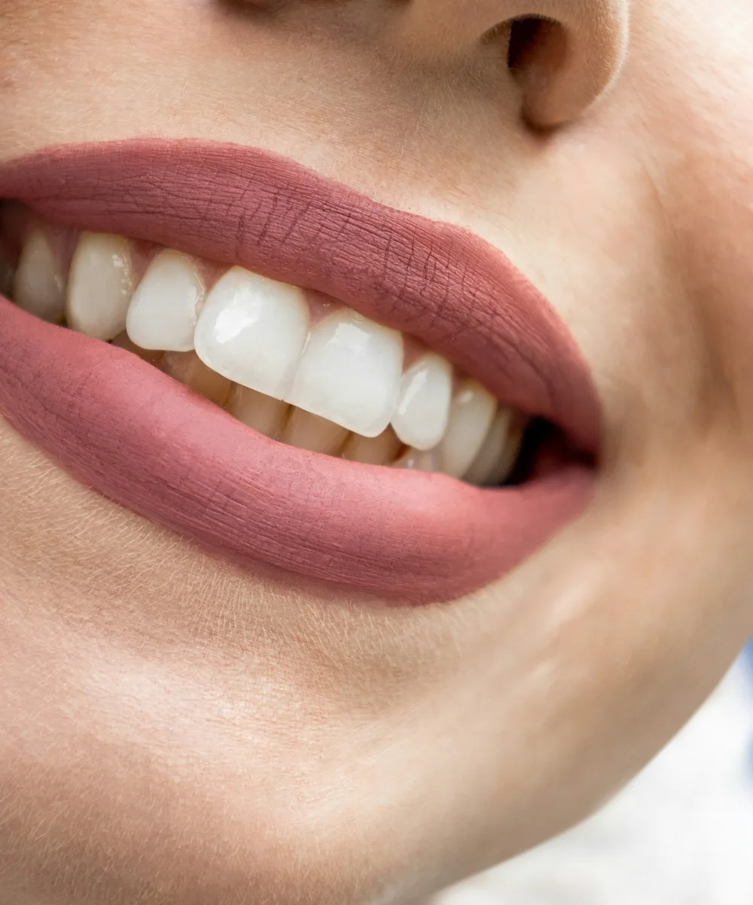
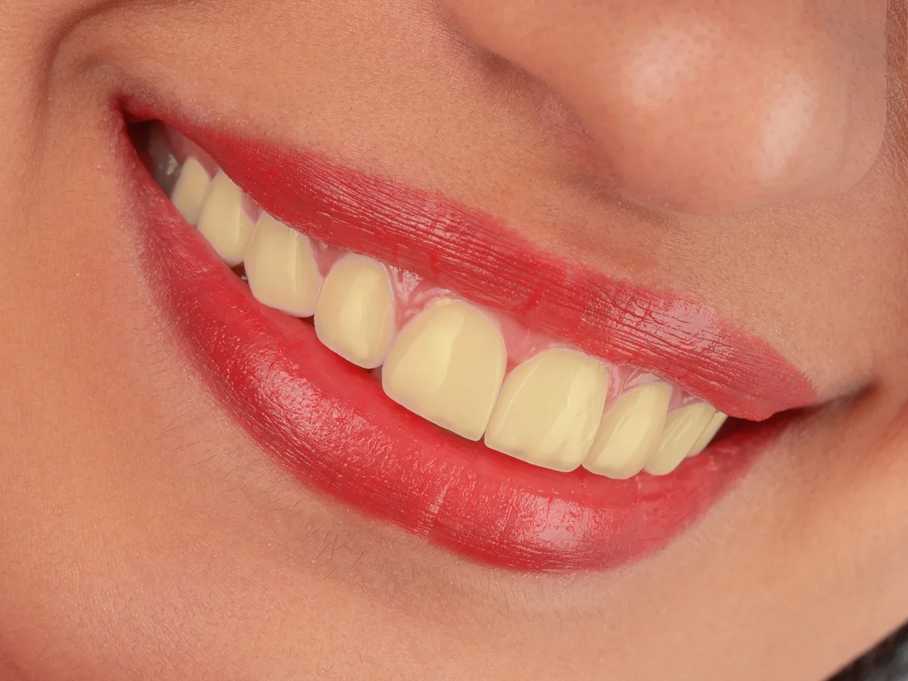
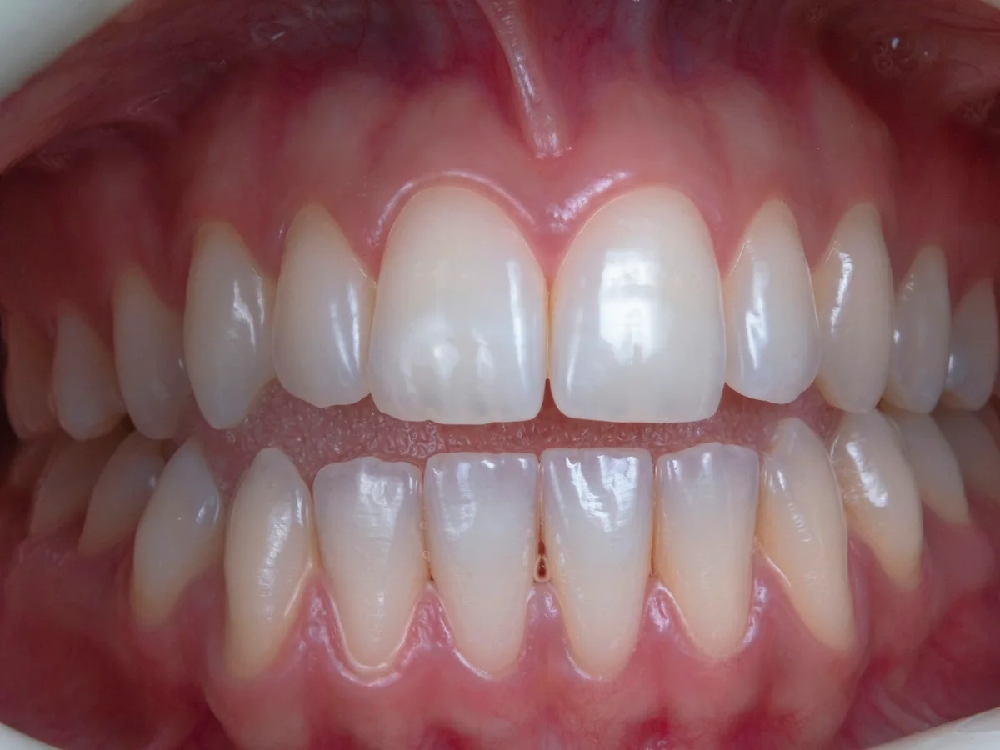

Do primeiro dente ao implante, a família inteira no mesmo lugar
Odontologia moderna, com mão leve.
Cuidado para sorrisos saudáveis em todas as idades. Com conforto, precisão e uma equipe que explica cada passo antes de ele acontecer.
Avaliação do sorriso
Escaneamento 3D, radiografia de baixa dose e uma conversa de verdade sobre o que você quer.
Plano por escrito
Prazos e valores no papel antes de qualquer tratamento começar.
Tratamento
Consultas calmas, sem pressa, sempre com o mesmo profissional.
Manutenção
Lembretes, limpezas e retornos que fazem o resultado durar.
Fazemos uma odontologia pessoal, com tecnologia atual e mão leve, para que cada paciente saia com um sorriso saudável e um plano claro para mantê-lo assim.
Os números de quinze anos no Batel
- 98%
- de pacientes satisfeitos
- 12 mil
- sorrisos atendidos
- 4,9
- nota no Google
- 15
- anos de clínica

Tratamentos / Conheça os tratamentos que mais fazemos
Todo tratamento começa com um check-up digital e um plano por escrito, com os valores antes. A clínica é calma e silenciosa, pensada para nenhuma consulta parecer corrida.
4,9 no GoogleNota de exemplo
Os pacientes contam que as consultas são tranquilas e bem explicadas. Deslize para ver o que mais fazemos e toque num cartão para saber como funciona.
Cuidado de perto /
Um cuidado que você acompanha, da primeira consulta ao retorno
Plano de alinhadores
No prazo14/ 22 placas
Próximo retornoem 10 dias
- Uso hoje
- 21h10
- Movimento até agora
- 64%
Exemplo do acompanhamento que o paciente recebe
Orçamento por escrito
Sem surpresas- Lentes de contato dental x4R$ 7.200
- Desenho digital do sorrisoR$ 450
- Desconto à vista-R$ 765
ou 10x de R$ 768,50 sem juros. Valores de exemplo.
A cada 6 meses
Mantenha o cuidado em dia
Limpezas, retornos dos alinhadores e lembretes gentis. Um sorriso bonito começa com constância.
Como funciona a manutençãoEspecialistas / Mãos experientes, consultas sem pressa
Agendar com um especialistaHelena cuida da parte estética da clínica, do clareamento às lentes de contato. Ela desenha cada sorriso no computador antes, para você ver o resultado antes de qualquer dente ser tocado.
- Experiência
- 12 anos
- Formação
- Especialista em Dentística
- Na clínica
- Seg, qua e sex
Resultados /
Arraste e veja a diferença
Clareamento combinado, de consultório e caseiro, em três semanas. A cor sobe sem mudar o formato dos dentes.
Tempo de tratamento3 semanas
As imagens são simulações ilustrativas. Na clínica, mostramos casos reais só com autorização por escrito do paciente.






Por dentro da clínica /
Estrutura atual para um sorriso mais saudável
Quatro consultórios reservados, uma sala de espera silenciosa e equipamentos escolhidos tanto pelo conforto quanto pela precisão.
Radiografia digital de baixa dose
Muito menos radiação que o filme antigo, com a imagem na tela em segundos.
Coroas de cerâmica no mesmo dia
Desenhadas e fresadas aqui na clínica, colocadas numa única visita.
Opções de conforto
Fones com cancelamento de ruído, manta pesada e sedação leve quando você pedir.

- Check-ups recomendados
- 2 por ano
- Consulta média
- 40 min
Agenda de hoje60%
Avaliações /
O que dizem os pacientes
4,9no GoogleNota de exemplo
Depoimentos e fotos de exemplo. Para publicar, use relatos reais com autorização por escrito.
Blog / Dicas para manter o sorriso saudável
Dúvidas /
Perguntas respondidas
Ficou alguma dúvida? Ligue para a recepção no (41) 3020-0000 ou chame no WhatsApp que a gente conversa.
Atendemos por reembolso dos principais planos odontológicos. Mande a carteirinha antes da consulta e a gente confere a cobertura e entrega o orçamento por escrito.
Leva cerca de uma hora: escaneamento 3D, radiografias de baixa dose, exame completo e uma conversa sobre o que você quer. Você sai com um plano por escrito e os valores de tudo o que recomendarmos.
Sim. Deixamos horários livres todos os dias úteis para urgência. Ligue ou chame no WhatsApp até as 11h que atendemos no mesmo dia em casos de dor, inchaço, dente quebrado ou restauração que caiu.
Conte na hora de agendar. Marcamos uma consulta mais longa, explicamos cada passo antes e combinamos um sinal para parar quando você quiser. Temos fones, manta pesada e sedação leve.
Tratamentos acima de R$ 500 podem ser parcelados em até 10 vezes sem juros no cartão. O orçamento já mostra o valor total e o valor de cada parcela.
Assim que nascer o primeiro dente, ou até o primeiro aniversário. A primeira visita é curta, serve para a criança conhecer o lugar e para os pais tirarem dúvidas.
Pronto para um sorriso mais saudável? /
Agende sua consulta hoje
A equipe ajuda você a escolher o tratamento certo, e a primeira consulta já inclui o escaneamento 3D completo.